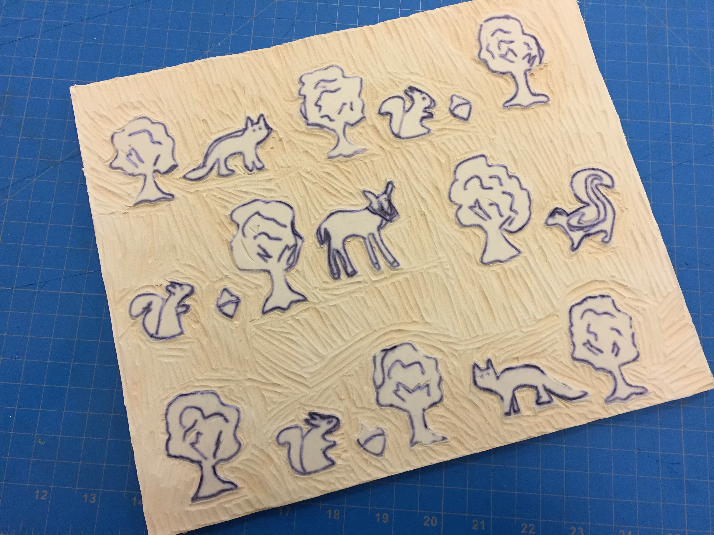

The semester got officially launched for adaptive design chapter at SLC with a workshop for interested volunteers. The initial workshop went over the concepts of cardboard carpentry and Arduino circuits. Participants assembled a "Circle Time Bench" under the direction of the student leaders and got the LED blink sketch up and running with the Arduino. A button was added into the circuit and the students plugged in a powerswitch tail to control a fan.


Today we went to Elizabeth Seton Pediatric Center to present our prototypes to the recreational therapists, in order to get feedback on what steps we need to take next. Overall, the ideas we presented were well received, and we will continue to work on our previous projects: 1.) a set of adaptive stamps and stencils, 2.) an interactive story time board, and 3.) and a remote control car with drawing instruments attached (a.k.a "RC Car(t)). We also had a chance to visit the kids and see their space, which gave us a better sense of how to approach the building of equipment. We have developed a list of steps that need to be taken, and plan to delegate these out to group members next Sunday.
Remote Control Car
Story-Time Board
Stamps/Stencils
Location Sensor
Students worked concurrently on a few different projects. Initially, three students worked to debug the Wifi setup of the Raspberry Pi and Adafruit HUZZAH. The two stopped communicating with each other and the team worked to determine how to add button input to the devices to communicate wirelessly. The other group worked to to figure out a stamping mechanism to provide an art and craft activity for the children at the center. After getting their respective project to a comfortable place, they took on a few other projects. One group worked on continuing the wall for the remote control marker. Another set looked at adding more functionality of the HUZZAH to control a fan. A third individual started researching a new project utilizing a means to locate a child able to move from neighborhood to neighborhood.
The students worked to push forward the projects, working on a stenciling block for arts and crafts, a boardering wall to contain the remote control pen, and tables for the sensory stations for reading time. A list of supplies was compiled and ordered for finishing up the iterations of the projects. Together we were going to determine if it would be possible to go into the center on November 6.
After the group spent the last week edging the sensory tables, they felt they needed a bit more time before presenting the next iteration of the project to the therapist.
We worked on the website and arduino code for our location tracker service, as well as duplicated the raspberry pi code so that we could later work to build other story time units.
Today we worked on carving the adaptive stamp, began to reconstruct the breadboard for the story time unit, edged the border for the car, and worked on coding the location tracker.
Today we finished carving the prototype of the adaptive stamp / stencil, and also switch-adapted the toy car. To adapt the toy car, we used a receiver to measure the frequency of the control. We then copied this frequency, and created a secondary switch using this copy. This was done using open source code available online. Next week we plan on testing the stamp proto-type and soldering the second switch so that it becomes permanent.
Today the group split in two and worked on two separate projects. We continued working on replicating the consoles. We also continued working on getting the remote control to work independently and adaptively. Next time we plan on working on the software side of the raspberry pi and building a housing unit for the remote control.